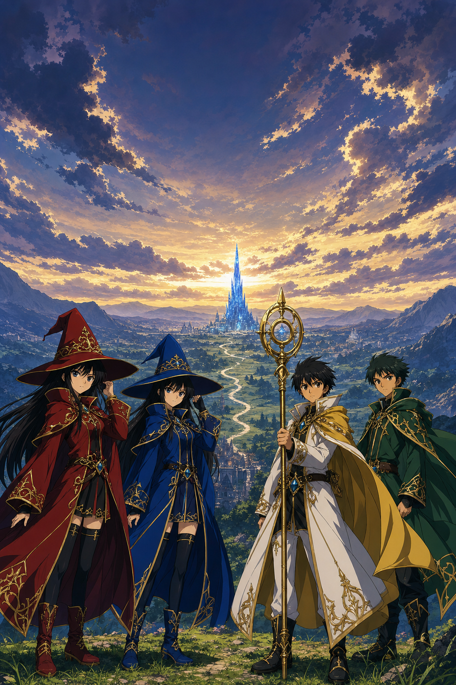
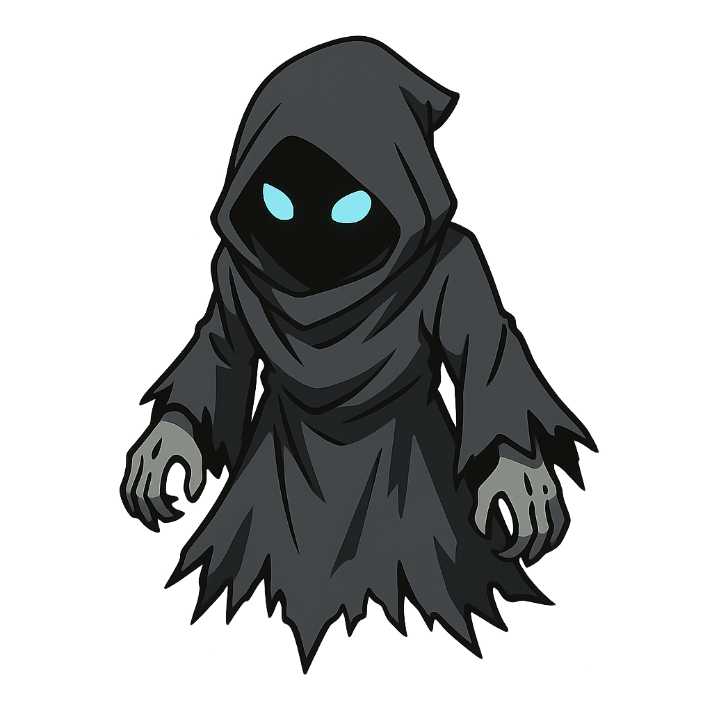
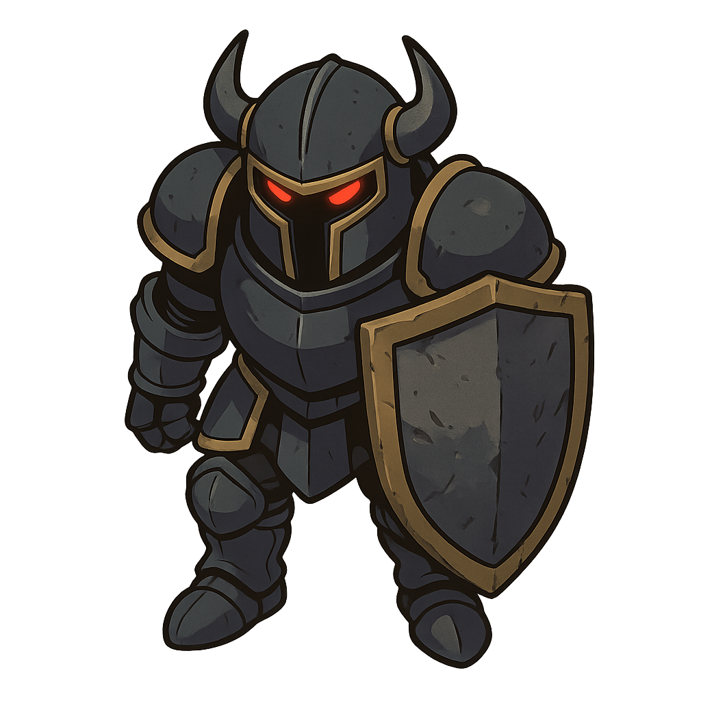
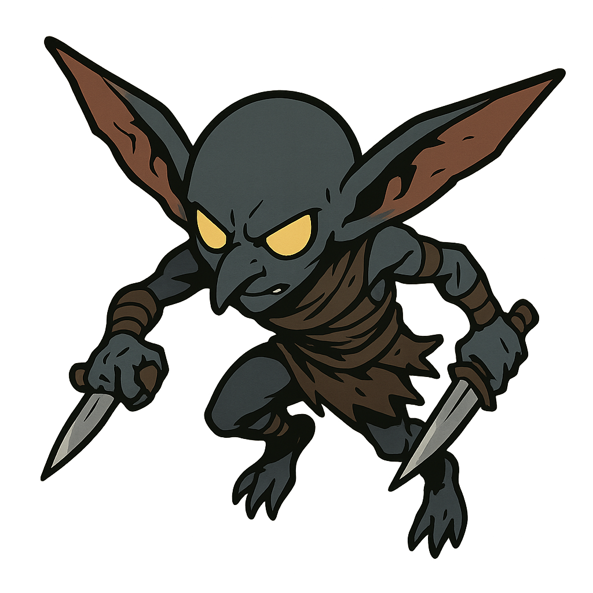
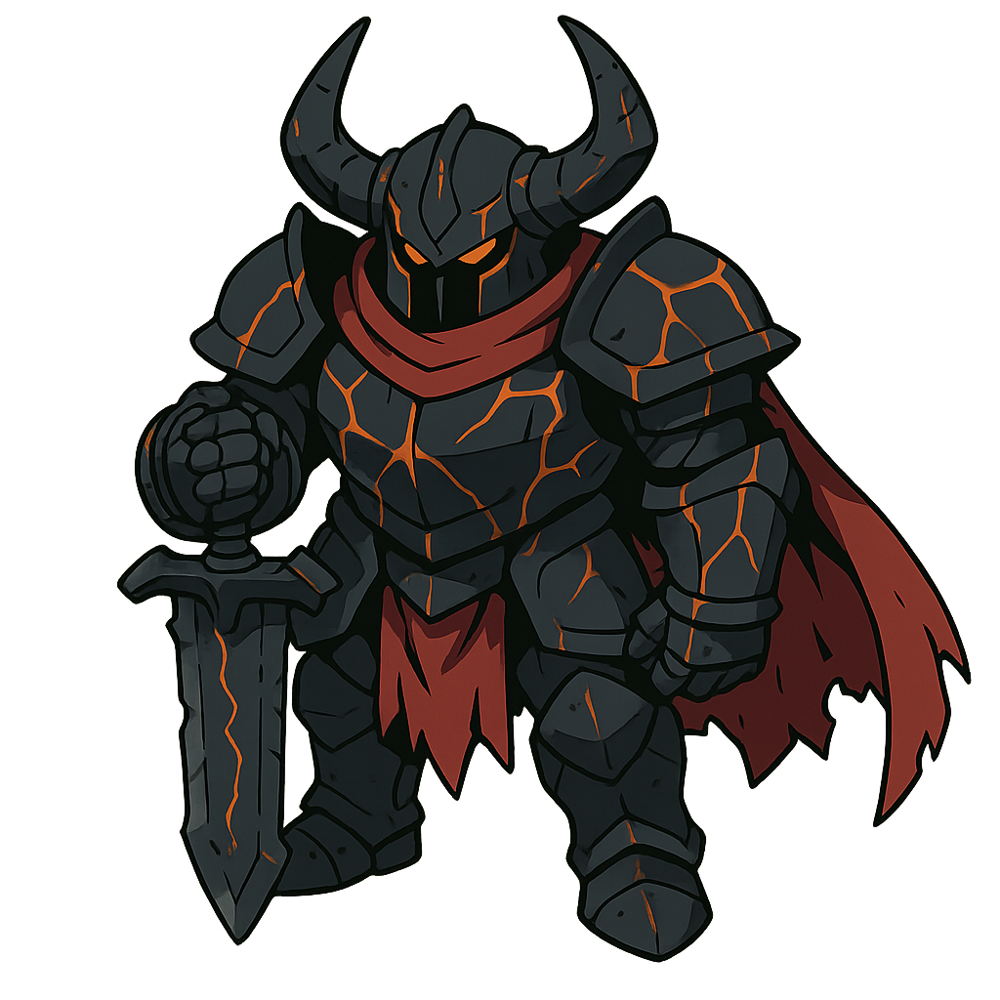
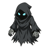
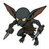
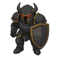
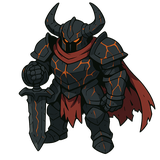

Generated Art生成アート
Six raster assets from gpt-image-2 and gpt-image-1, filling the
gaps procedural art could not: painterly key art and character sprites. Everything geometric — icons,
magic circles, the path, sockets, the HUD — stays procedural, because vector stays crisp at every size
and the path has to align with gameplay waypoints.
Masters are 1024px; drop-in game-size copies are in assets/art/128/.
All four sprites carry a real alpha channel (verified alpha_min = 0), not a matte.
Title key art — un-cuts T26
T26 was cut in Phase 3 because compositing four cream-backed character crops over the mood reel needed alpha matting nobody had budgeted. A single generated key visual removes that problem entirely. Composition was directed to leave the upper third empty for the logo, and it matches the mood reel's arc: storm breaking into gold light, a path leading to a crystal spire.

The dark scrim top and bottom is doing real work: it holds the logo and the tab row at contrast without dimming the illustration's midtones, where the characters live. Without it the gold logo sits on bright sky and disappears.
All four characters read against their sheet palettes — crimson, cobalt, gold and white, green. The staff, the cape trim and the filigree carry over from the character sheets, which is what makes this look like the same production rather than stock fantasy art.
Enemy roster — the gap that had no assets at all
The plan settled on "flat cloaked silhouettes with an element-tinted rim light" purely because no enemy art existed. These replace that fallback. Silhouettes are deliberately distinct at gameplay size — draped, blocky-with-shield, spindly, and the boss reading wider and taller than anything else on the field.

Shadebasic · fast-ish
Revenantarmoured · slow
Scout Impfast · fragile
WarlordbossGround texture — fixes the "noise reads as mud" problem
Phase 3 #18 rejected a noise-tinted ground: noise reads as texture at 2000px and as dirt
at 360px. A painted tile solves it without touching the path, which stays procedural so it keeps
matching the waypoint spline. Measured edge mismatch is 6.5/255, so it tiles cleanly.
The raw generation was too bright and saturated for the battlefield palette, so the dark variant is
the one to ship.
Assembled — generated art under procedural geometry
Painted ground, real sprites, and a procedural path with a gold inner rule and a magic circle decal. This is the actual division of labour the plan now calls for.



